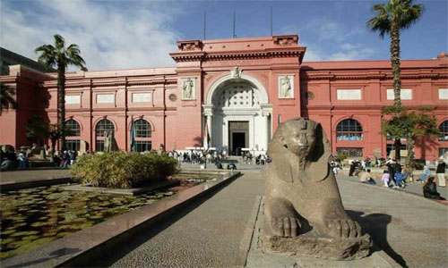
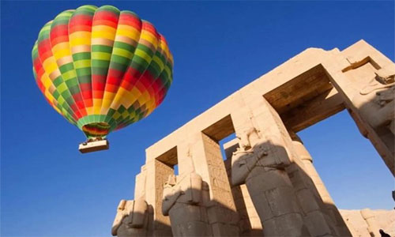
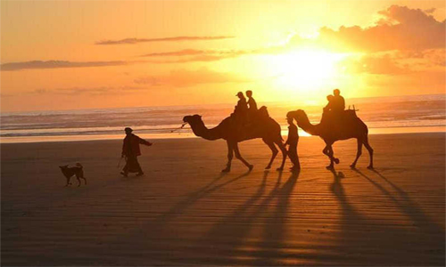

Some activities you can do in Egypt
Full Day Tour to Banks of Luxor

See the highlights of Luxor on this full-day tour of to the East and West Banks of the Nile. Explore the city's magnificent temples, tombs, and monuments in the company of an Egyptologist guide. Includes visits to the Valley of the Kings, Temple of Queen Hatshepsut, and Karnak Temple.
Please visit this website for more info viator.com
Giza Pyramids and Egyptian Museum Tour

Tick off the highlights of ancient Egypt during this full-day, Egyptologist-led private tour. Marvel at the millennia-old Giza Pyramids—guarded by the enigmatic, lion-bodied Sphinx—and view thousands of relics from antiquity at the Egyptian Museum in downtown Cairo.
Please visit this website for more info Egyptian Museum
Trip Hot Air Balloon Ride in Luxor

Sail high over the famous monuments of Luxor on a sunrise hot air balloon ride.
Please vist this page for more experiences
Go Scuba Diving(Hurghada)
The Red Sea coast of Egypt is famous for the town of Hurghada, which offers lots of fun things to do in Egypt in December. The stunning landscape here, complete with coral reefs, crystal clear waters, and sandy shores makes for the perfect spot for diving and snorkeling.
Go Camel Riding At Sunset(Giza)
One of the seven wonders of the ancient world, the pyramids inspire awe. That’s why riding into the sunset at Giza makes it to every list of Egypt things to do.